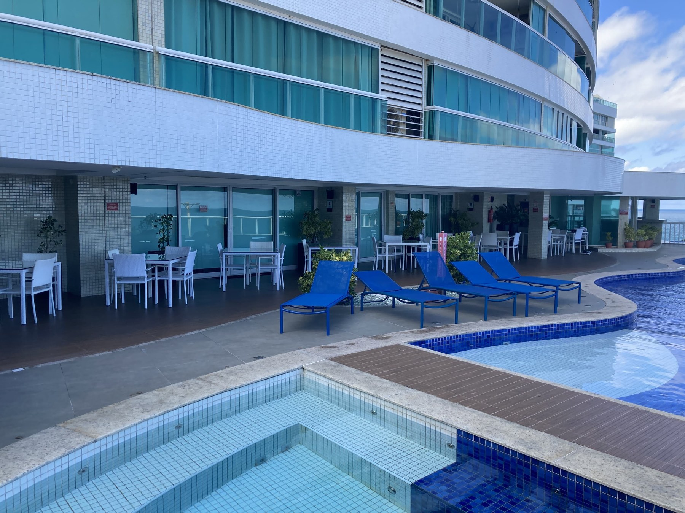

Deck Piscina
Proposta de valorização estética da área da piscina com intervenções de baixo a moderado impacto, preservando piso, arquitetura e materiais principais.

Área da piscina com mobiliário branco, espreguiçadeiras em azul saturado e elementos técnicos aparentes.
Clique aqui para ver a imagem maior

Proposta com cores mais equilibradas, vegetação organizada, iluminação mais acolhedora e camuflagem de elementos técnicos.
Clique aqui para ver a imagem maior
Área da piscina: proposta de valorização estética
A área da piscina do Costa España possui grande potencial de valorização. A arquitetura curva, a vista para o mar, os vidros azul-esverdeados, a presença da água e o deck amadeirado já formam uma base visual interessante. O desafio atual não está em modificar a estrutura do espaço, mas em corrigir desequilíbrios estéticos que enfraquecem sua percepção.
Hoje, alguns elementos acabam competindo entre si. A pintura recente das espreguiçadeiras, por exemplo, substituiu um azul mais fechado por uma tonalidade excessivamente saturada, que chama mais atenção do que deveria e cria conflito visual com a piscina, os vidros e a paisagem.
As mesas e cadeiras brancas também contribuem para uma sensação fria e pouco acolhedora. Em uma área de descanso à beira-mar, o excesso de branco rígido reduz a sensação de conforto e deixa o ambiente sem textura, profundidade e calor visual, aproximando o espaço de uma estética mais técnica do que residencial.
Os vasos pretos e as caixas de som aparentes reforçam esse problema. Os vasos criam peso visual desnecessário em um ambiente que pede leveza e integração com a paisagem marítima. Já as caixas de som pretas, aplicadas sobre paredes claras, tornam-se pontos de contraste pouco integrados à arquitetura. Uma solução mais elegante seria embuti-las no gesso ou, ao menos, pintá-las de branco para reduzir significativamente seu impacto visual.
A iluminação também merece revisão. As luminárias embutidas existentes, com luz fria e desenho pouco refinado, prejudicam a atmosfera noturna da área. O ideal seria uma iluminação mais quente, discreta e indireta, adequada a um ambiente residencial de descanso.
A proposta apresentada busca valorizar o espaço sem obra pesada, preservando piso, arquitetura e materiais principais. As intervenções seriam concentradas em ajustes de cor, tecidos, vasos, vegetação, alinhamento do mobiliário, camuflagem de elementos técnicos e melhoria da iluminação.
O ponto mais importante é que essas mudanças têm alto impacto perceptivo e custo relativamente baixo. Não se trata de uma reforma estrutural, mas de uma correção estética inteligente. Ao ajustar cores, tecidos, vasos, iluminação, vegetação e organização do mobiliário, a área pode mudar radicalmente de aparência sem necessidade de trocar piso, alterar revestimentos ou realizar grandes intervenções civis. É uma proposta de valorização com excelente relação entre custo, simplicidade de execução e resultado visual.
O objetivo não é transformar a piscina em um beach club, mas revelar melhor o potencial do próprio Costa España: uma área residencial nobre à beira-mar, mais leve, coerente, confortável e visualmente sofisticada.